Software that pays for itself.
Direction 61 · Sun Road · asset kit
Dawn
Dusk
Software that pays for itself.
The site is a coastal drive from first light to dusk. The years stand along the kerb as milestones, the products travel as postage stamps, and the light changes as you scroll. Pastel, centred and symmetrical, with a little deadpan wit.
Two public-domain coast paintings (Henri-Edmond Cross, Claude Monet) are graded into a palette of Miami morning pastels, and a shader re-lights them live from dawn to dusk. Grab the slider above.
Generous paper, a single framed image, a single line of serif. Ephemera are punctuation, never wallpaper. The subject is always the software.
Four pastels carry the light; burgundy does all the talking. Body text is ink on paper (13.7:1).
EB Garamond for everything that is read. Jost, a geometric sans in the Futura tradition, only for tiny tracked labels.
Aa
Quiet software that pays for itself.
Albretsen AS
Jost 500 · tracked .26em · labels only
Asgeir Albretsen has published on Google Play since 2016. Fun Libs, a fill-in-the-blanks word game he built at seventeen, has passed 113,000 installs without marketing. MCP Emails gives AI agents an inbox: seventeen tools, about a hundred email providers, open source.
A road in one-point perspective draws the letter; the sun sits on the vanishing point; the crossbar is the horizon. Wordmark: EB Garamond capitals tracked .16em, outlined to paths.
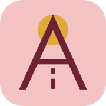
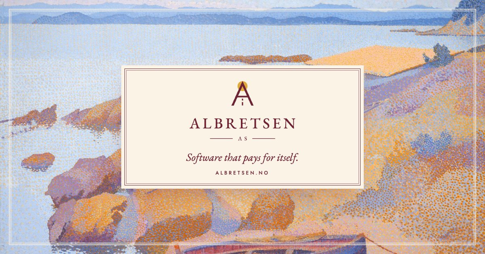
Served as AVIF / WebP / JPEG at 960, 1600 and 2560, with 4:5 crops for phones.


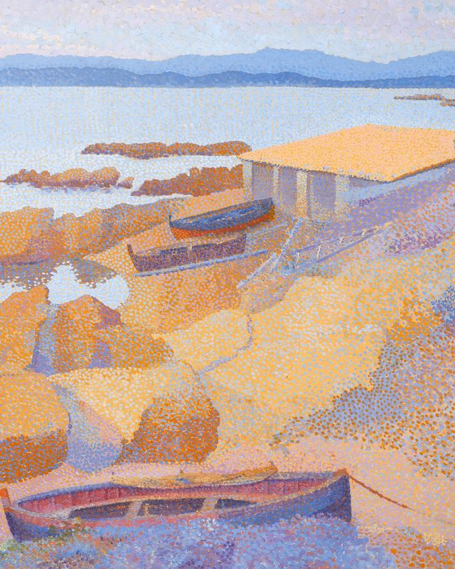
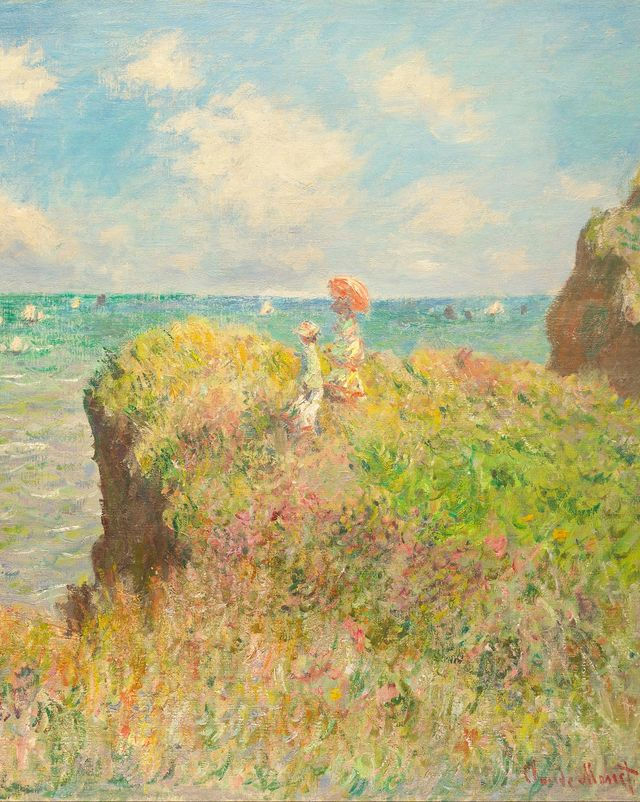
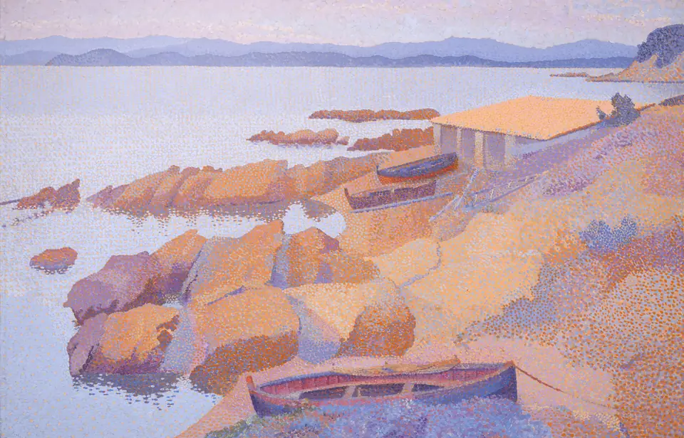
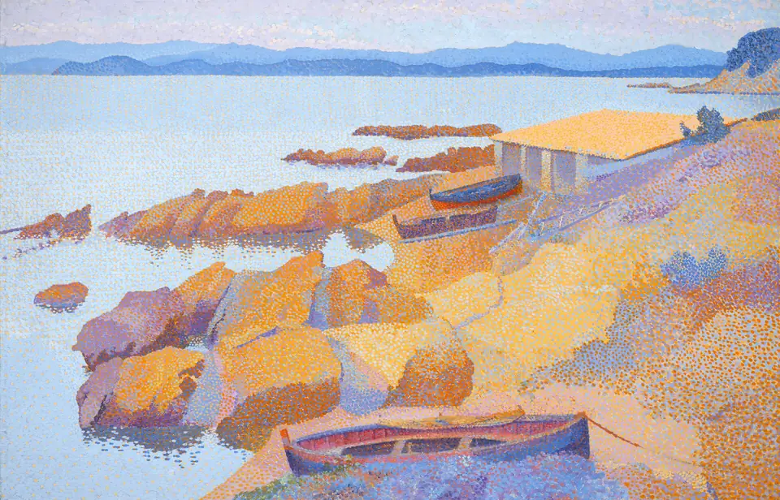
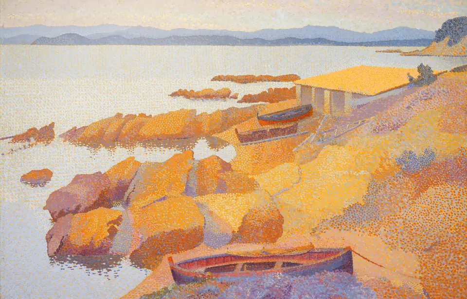
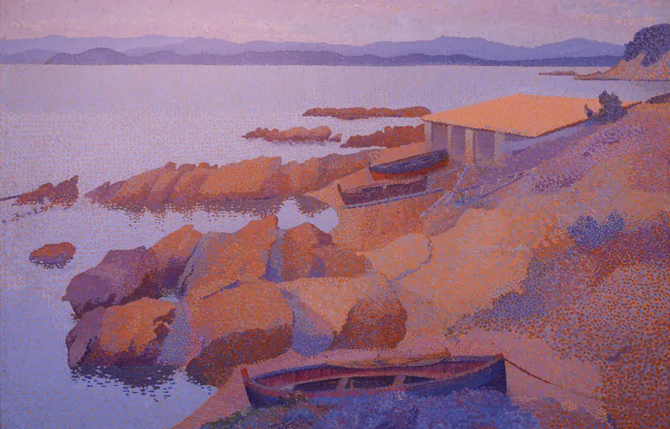
Real logos in a cream medallion, under an arched window cut from the paintings. The denomination is the product's real figure.


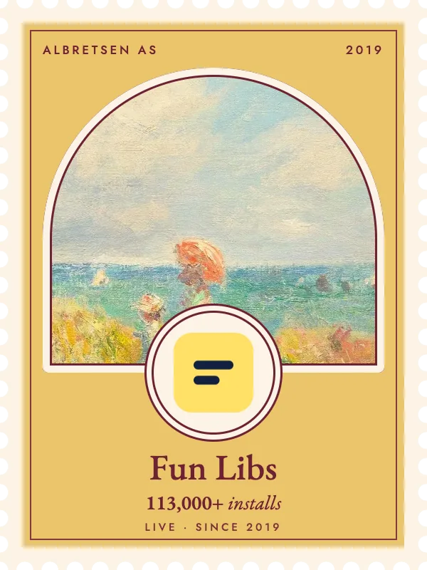
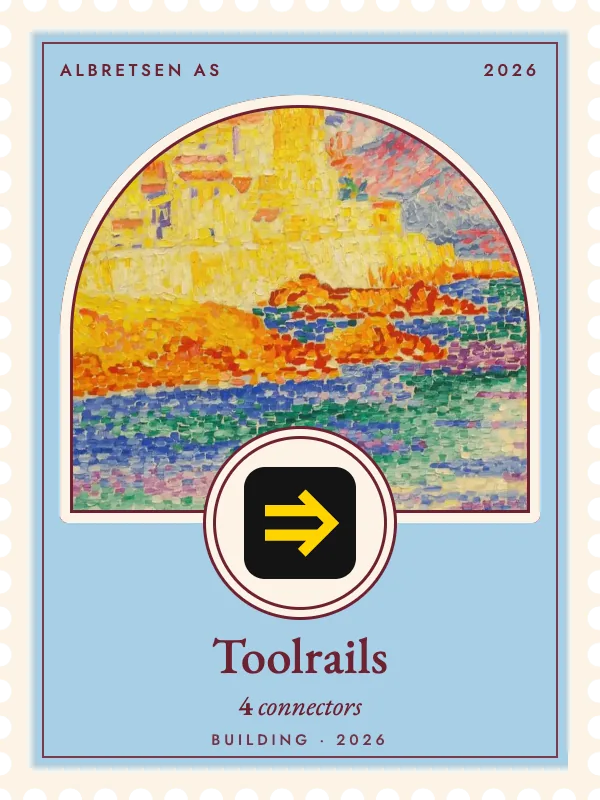
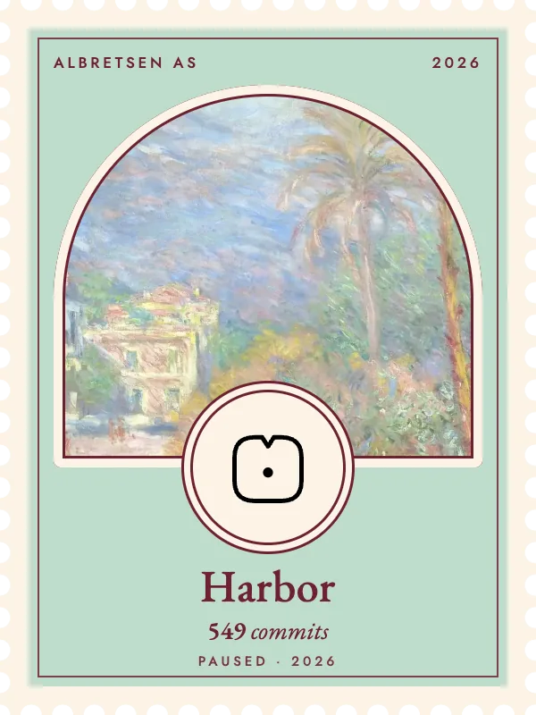
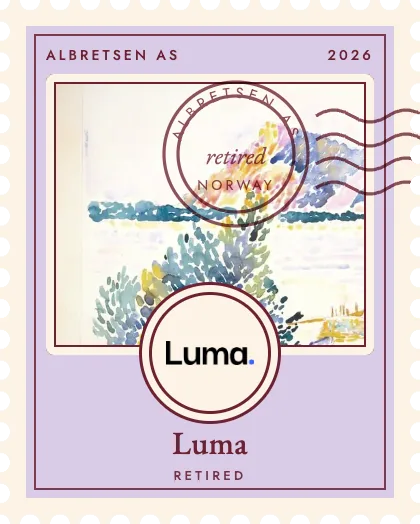
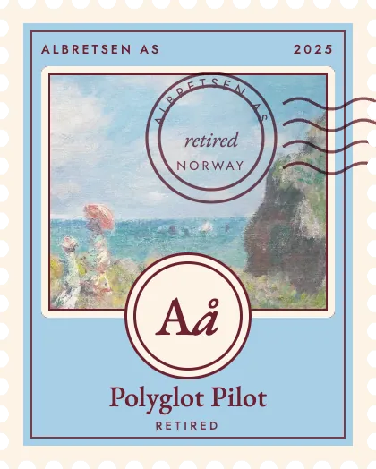
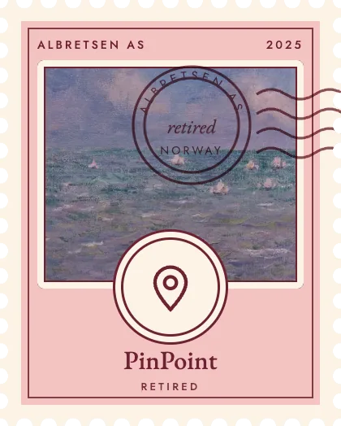
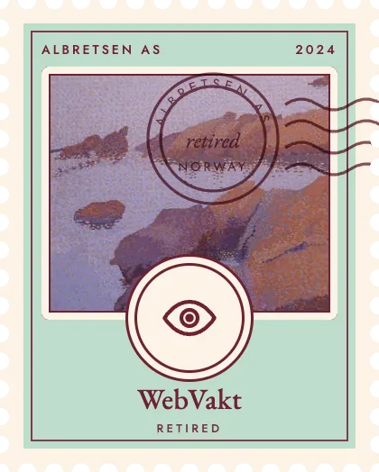
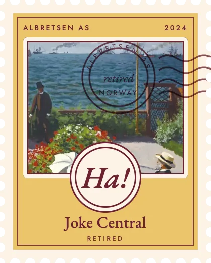
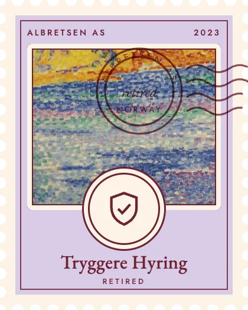
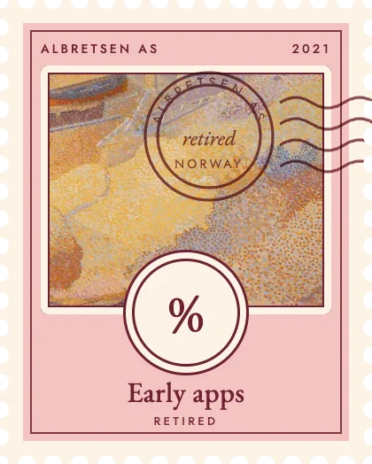
Small things that give the page texture. Use one per screen at most.
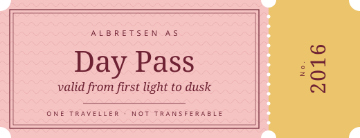
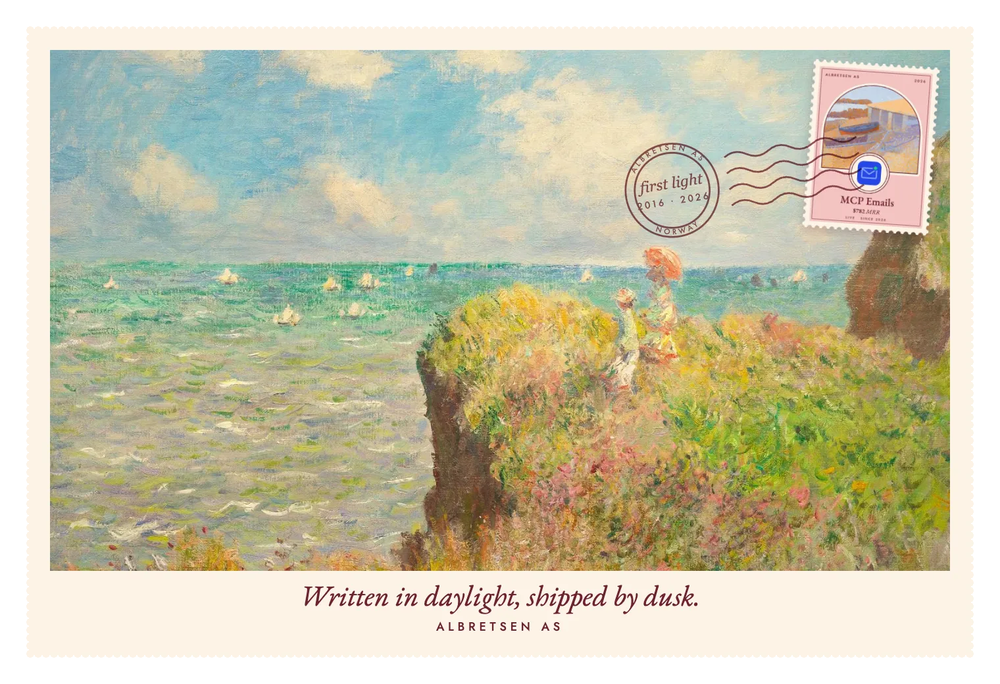
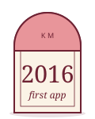
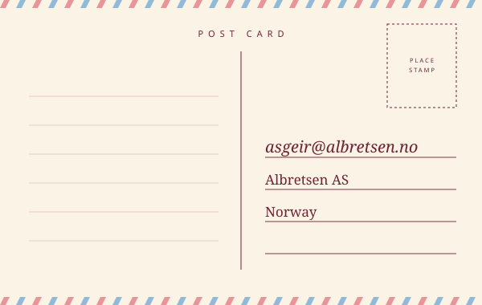
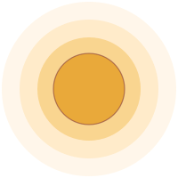
Canvas 2D, about 9 KB. Scroll drives the drive: the dashes rush past, milestones for each year approach in symmetrical pairs, and the sun crosses the sky. Pointillist headlands frame it like a stage.
Also live at the top: interactive/daylight.js re-lights the hero painting in a WebGL shader. Demos: coast-road-demo.html, daylight-demo.html.
Sea swell, a little wind and a bell from a town square somewhere off to the left, all synthesised live with Web Audio (interactive/ambient.js, no audio files). It follows the time of day.
Five baked grades cross-fade as you scroll (no WebGL needed), and the sun rides its arc. Scroll the page, or use the slider.
All in motion.css + motion.js. Each finishes perfectly still and centred; all reduce to fades under reduced-motion.
A stamp lands 6% large and slightly turned, overshoots by a hair, settles; then the ink blooms from blurred to crisp. .62 s press, .9 s ink.
The camera snaps sideways to the next symmetrical tableau: 38vw lateral move, 14px horizontal blur, dead-centre landing. Between sections only.
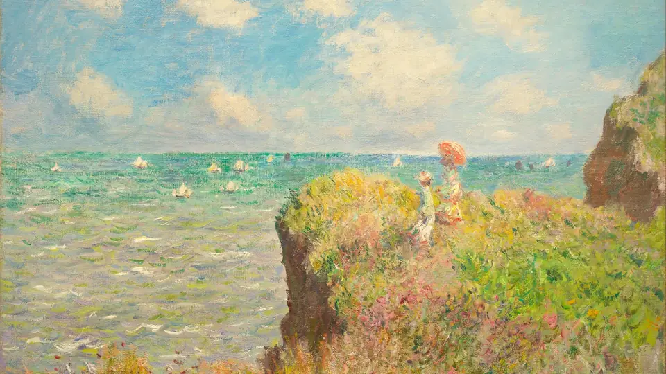
The establishing shot: a 6% push-in while two paper letterbox bars retract. 1.8 s, once, on load.
Fun Libs
A band of light passes once across a serif headline as it enters view, like sun moving on water.
Hover or focus: the stub swings 4° on its lower hinge and slides 10 px along the perforation. For the one link that matters.
Scroll sets --day; graded copies cross-fade, the sun arcs, the paper dims at dusk. See section 08 above.